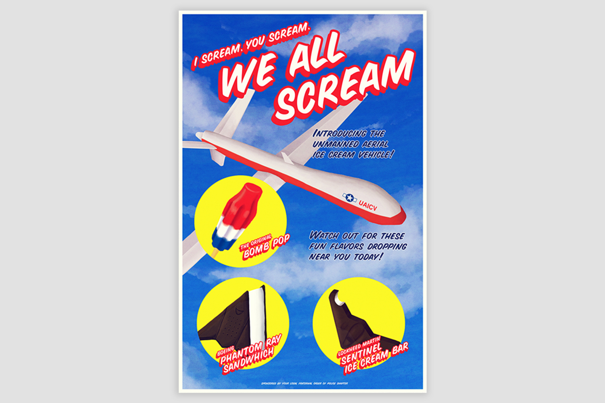
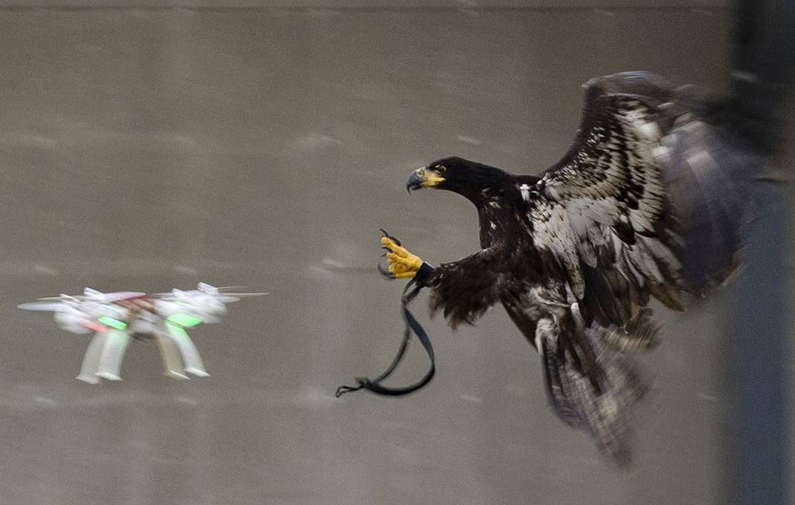
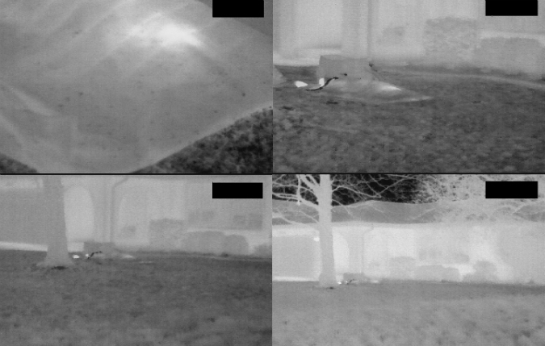
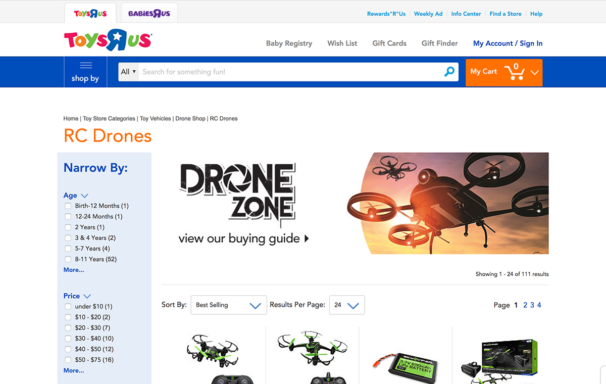
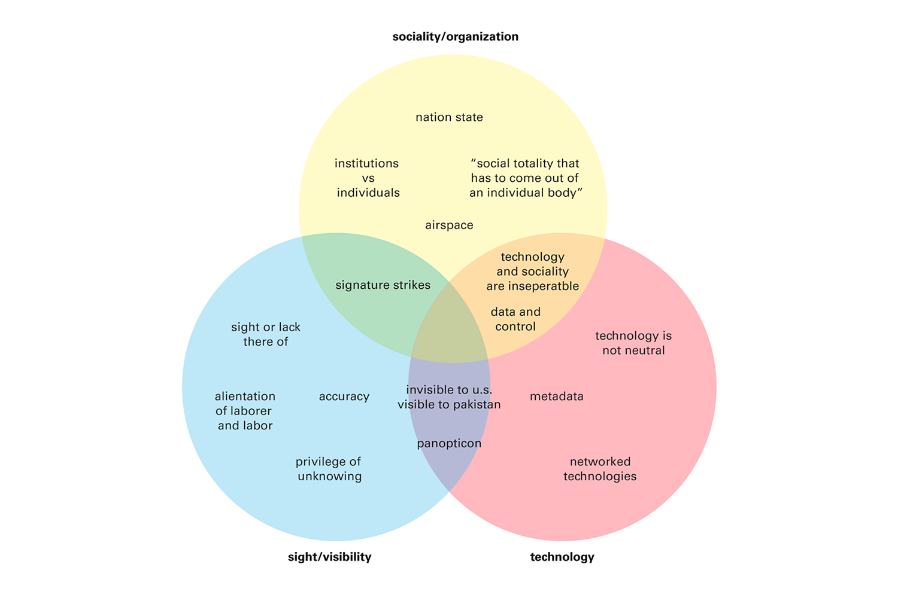
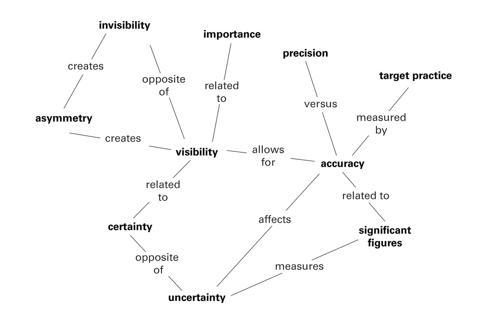

Exploring mass surveilance and drone policy
“We all Scream” is a poster from a speculative mass surveillance future and critiques drone policy, surveillance, policing, and military activities abroad.
Speculative design is criticized for its shortsightedness and ignorance of privilege; designers often explore dystopic futures that already exist in the global south. My intention was to create an artifact that would force viewers to reflect upon not only their own circumstance but also the reality of other distant individuals.
In the U.S., drone technology lives two very different lives for consumer usage and military usage. Drones exist primarily as a niche hobby for shooting travel vlogs and other adventurous activities. Legal dialogue tends to center on regulating their presence. In the military, drones perform reconnaissance, search and rescue, surveillance, and strike missions. Cruising at high altitudes, UAVs are designed to be invisible for maximum efficacy. The U.S. military insists that drones effectively target enemies of the state, but civilians are caught in the crossfire.
As I researched the present state of drones, I mapped out characteristics and themes that emerged.
